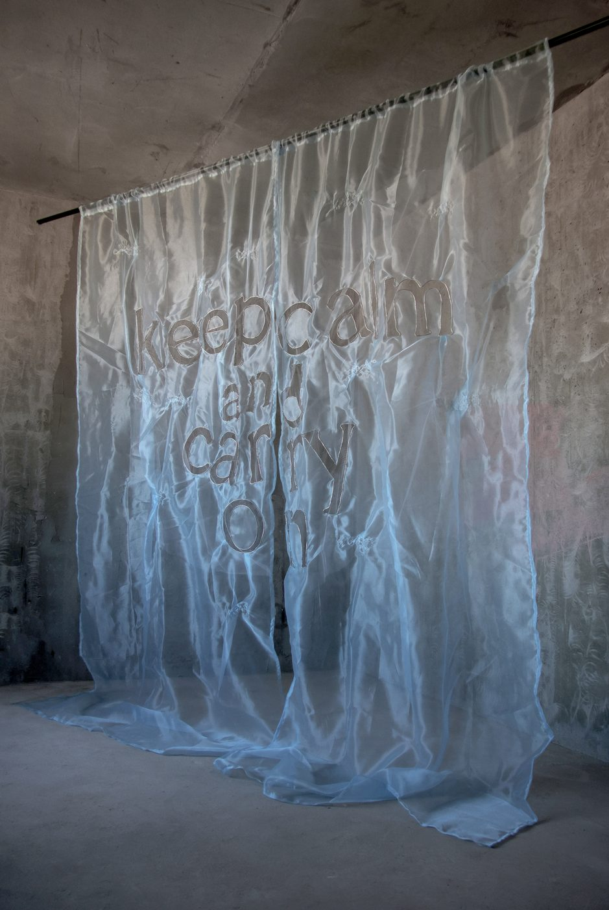
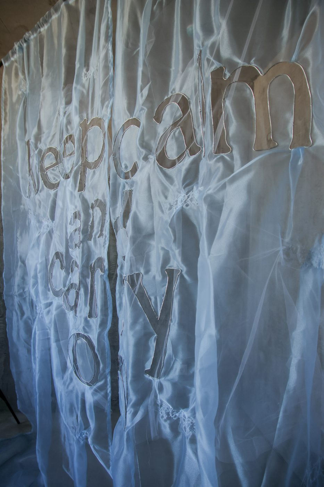
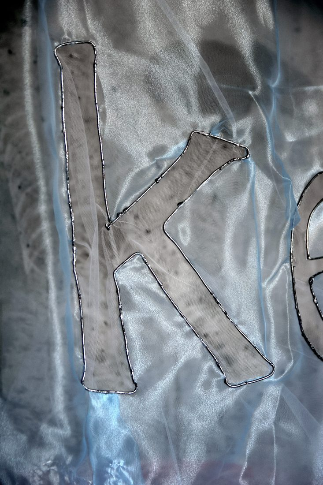
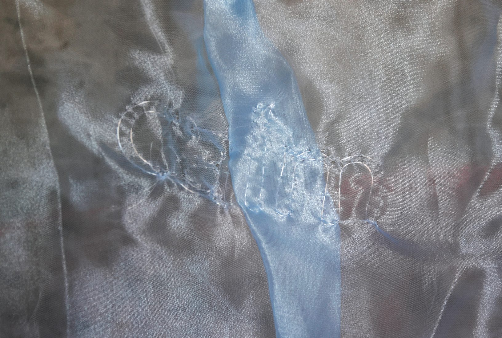

Keep Calm and Carry On, 2026


The work examines the injunction to "carry on" — an order that governs a person all the more effectively the less it is noticed: not a command but a background, leaving no pause for conscious choice. Its point of entry is the phrase Keep Calm and Carry On — a wartime propaganda slogan that became a global internet meme in the 2000s. Today the injunction is no longer spoken aloud: it has become an invisible structure of pressure in which rising anxiety coexists with the demand to keep going.
The letters of the phrase exist as an absent form — a cut into the fabric, deforming its support. The metal edging fixes the contour of what is no longer there. The curtains hang from a rail like real drapes, ready to move — yet they hang where there is neither window nor passage: the form of a threshold with no crossing. The call is present. Movement is impossible.
Read more
The work examines the injunction to "carry on" — an order that governs a person all the more effectively the less it is noticed: not a command but a background, leaving no pause for conscious choice. Its point of entry is the phrase Keep Calm and Carry On — a wartime propaganda slogan that, in the 2000s, turned into a global internet meme: light, ironic, a reflex of self-protection. Today the injunction is no longer spoken aloud — it has become an invisible structure of pressure in which rising anxiety coexists with the demand to keep going.
The formula has a counterpart in philosophy: Camus answered the question of a life without meaning in almost the same words — carry on. But his "carry on" rests on stopping and choosing consciously; the slogan offers the same movement without either. One and the same formula turns out to be both a definition of freedom and its suppression — the work holds this gap open rather than resolving it. (The parallel with the existentialist answer has been noted by the scholar of existentialism Sarah Bakewell.)
This condition is translated into form and material. The letters of the phrase exist as an absent form — a cut into the fabric, deforming its support. The metal edging fixes the contour of what is no longer there. The curtains hang from a rail like real drapes, ready to move — yet they hang where there is neither window nor passage: the form of a threshold with no crossing. The call is present. Movement is impossible.
A video projection onto the surface of the installation (a site-specific variant) shows the words appearing, losing coherence, tilting and settling — an environment that cannot withstand a regime of continuous pressure. It is not the phrase that breaks down, but the surface it is projected onto.
Details

